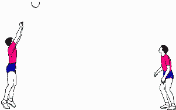
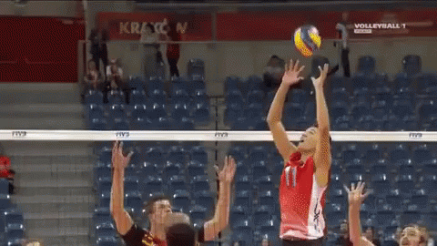

EL VOLEIBOL
QUE ES EL VOLEIBOL
El voleibol es un deporte de equipo que se juega con una pelota, en el que dos equipos de seis jugadores se enfrentan sobre una cancha dividida por una central roja.. El objetivo del juego es pasar la pelota por encima de la roja para que toque el suelo del lado del oponente, mientras que el equipo contrario intenta evitarlo.

El objetivo del juego es pasar el balón por encima de la red, logrando que llegue al suelo del campo contrario mientras el equipo adversario intenta impedir simultáneamente que lo consiga, forzándolo a errar en su intento. Surge una fase de ataque en un equipo cuando intenta que el balón toque el suelo del campo contrario mientras que en el otro equipo surge una fase de defensa intentando impedirlo.
El balón debe ser tocado o impulsado con golpes limpios, pero no puede ser parado, sujetado, retenido o acompañado. Cada equipo dispone de un máximo de tres toques para devolver el balón al campo contrario (además del contacto del bloqueo).[9] El balón se golpea normalmente con manos y brazos. Desde hace algunos años está permitido el contacto del balón con cualquier parte del cuerpo, incluidos los pies.[9] Una de las características más peculiares del voleibol es que los jugadores tienen que ir rotando sus posiciones a medida que van consiguiendo puntos.

El juego se pone en marcha con el saque y la jugada dura hasta que elbalón toca el suelo, va fuera, un equipo no logra devolverlo o comete falta.En este caso, se para el juego y se repite la jugada. Cada jugada supone unpunto y cuando el equipo que recibe gana la jugada, obtiene el derecho asaque y los jugadores rotan una posición en sentido de las agujas del reloj
IMAGENES DEL VOLEIBOL


